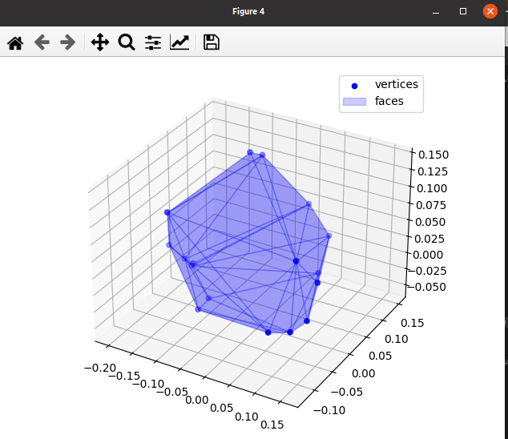

Find a vertex representation of a set of half-planes
A simple example program for find a vertex representation of a set of half-plane \(Àx\leq b\)
import pycapacity.algorithms as algos # algos module
import numpy as np
N = 100 # hundred inequalities (half planes)
m = 3 # space dimension
# define the inequalities
A = np.random.rand(N,m)*2-1
b = np.random.rand(N)
# find vertices and faces
verts, face_indices = algos.hspace_to_vertex(A,b)
# check if zero is inside the polytope
print('No vertices found: ', verts.shape[1])
# visualise the polytope found
# face indices to faces
faces = algos.face_index_to_vertex(verts, face_indices)
# plotting the polytope
import matplotlib.pyplot as plt
from pycapacity.visual import plot_polytope_faces, plot_polytope_vertex # pycapacity visualisation tools
fig = plt.figure(4)
# draw faces and vertices
ax = plot_polytope_vertex(plt=plt, vertex=verts, label='vertices',color='blue')
plot_polytope_faces(ax=ax, faces=faces, face_color='blue', edge_color='blue', label='faces', alpha=0.2)
plt.tight_layout()
plt.legend()
plt.show()
The output of this program will be an image vitvisualised vertices and faces of the specified inequalities \(Àx\leq b\)
